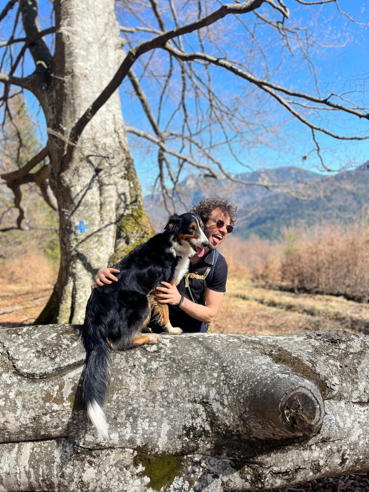
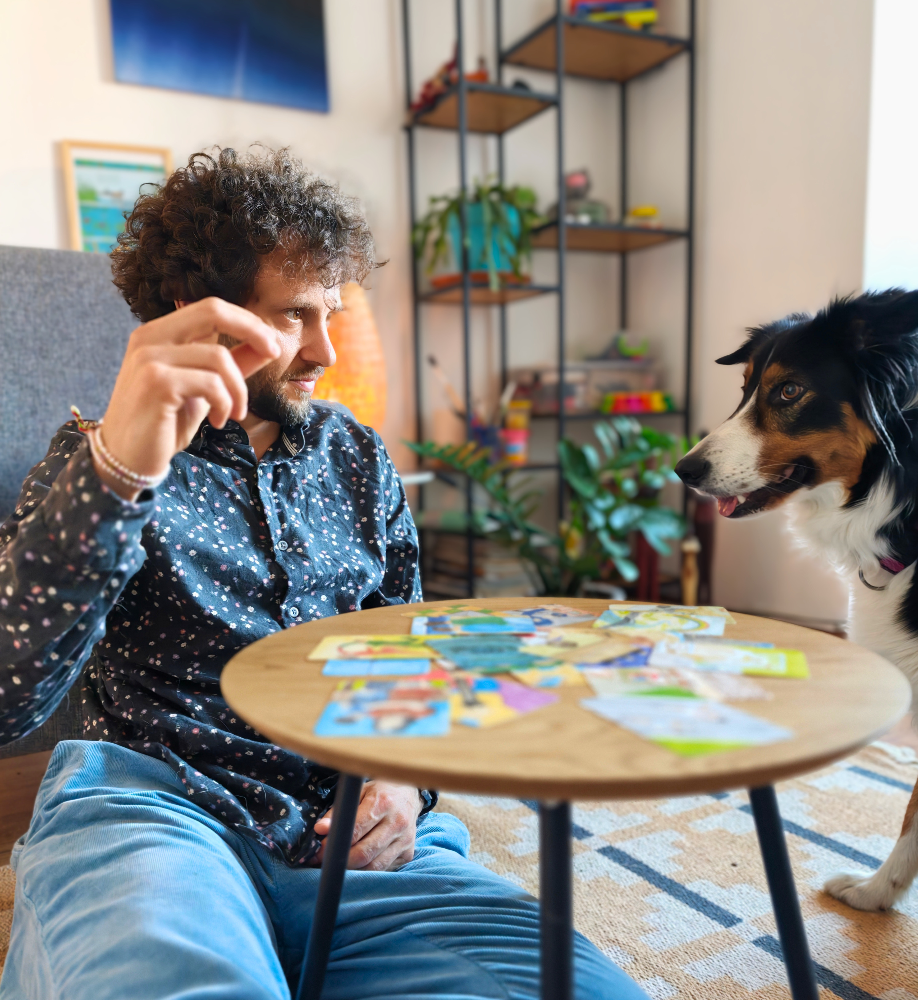

Psiholog & Psihoterapeut · Brașov & Online
Ai un loc unde
poți fi complet
sincer.
Fie că simți că ești blocat, că ceva nu merge cum vrei sau pur și simplu vrei să te înțelegi mai bine — terapia nu înseamnă că ești „stricat". Înseamnă că îți pasă de tine.
Prima ședință este o cunoaștere. Fără presiune, fără angajament.

Pentru cine
Cum pot să te ajut
Lucrez cu adulți care trec prin perioade dificile sau vor să se cunoască mai bine — și cu copii și adolescenți, împreună cu părinții lor.
Ești în locul potrivit dacă...
- Simți anxietate, îngrijorare constantă sau stări depresive
- Relațiile tale de cuplu sau de familie sunt tensionate
- Ai pierdut direcția — în carieră, în viață sau în identitate
- Ai trecut printr-o pierdere, o despărțire sau o schimbare majoră
- Simți că reacționezi „prea mult" sau că emoțiile te copleșesc
- Vrei pur și simplu să te înțelegi mai bine pe tine
- Ceva te blochează și nu știi ce anume
Ce este Terapia Gestalt Integrativă?
Gestalt înseamnă întreg. Lucrăm nu doar cu gândurile, ci și cu emoțiile, cu senzațiile din corp și cu felul în care ești prezent acum — în relație cu tine și cu ceilalți.
Nu există rețete sau soluții prestabilite. Explorăm împreună ce apare în ședință — și de cele mai multe ori, tocmai asta schimbă ceva.
Ședința durează 50 de minute. Frecvența obișnuită e o dată pe săptămână, dar adaptăm în funcție de nevoile tale.
Copilul tău ar putea beneficia dacă...
- Are dificultăți la școală (concentrare, refuz, relații cu colegii)
- A trecut printr-o schimbare mare (divorț, mutare, pierdere)
- Are izbucniri emoționale frecvente sau se retrage complet
- Manifestă anxietate de separare sau frici intense
- Este bullied sau bully
- Are comportamente pe care nu le înțelegi și nici el
- Ești tu, ca părinte, nesigur cum să gestionezi anumite situații
Cum funcționează terapia cu copiii?
Cu copiii, terapia se desfășoară prin joc, desen, povești și expresie creativă — limbajul lor natural. Nu este un interogatoriu și nu e înfricoșător.
Lucrez cu copii de la 9-10 ani și cu adolescenți. Părinții sunt implicați activ — prima ședință e cu tine, ca părinte, pentru a înțelege contextul.
Periodic fac actualizări despre progres, mereu cu acordul copilului.
În ședințele cu copiii poate fi prezentă și Mo, Border Collie-ul meu — mai multe detalii mai jos.

Despre mine
Horia Cențiu
Una dintre cele mai bune decizii din viața mea a fost să cer ajutorul unui terapeut. Nu a fost ușor — a trebuit să trec printr-o perioadă cu adevărat dificilă ca să ajung acolo. Și nu știam cât de mult o să îmi schimbe perspectiva și cât de mult simțeam că „mă agăță" lucruri pe care nici nu le vedeam.
Asta m-a adus în psihologie. Nu dintr-o teorie, ci dintr-o experiență reală. Cred că avem nevoie unul de celălalt. Că a cere ajutor e un act de curaj, nu de slăbiciune. Și că fiecare om are sens — inclusiv ce îl blochează.
Lucrez în ritmul tău. Uneori cu profunzime, alteori cu umor. Mereu spre ceea ce ai nevoie cu adevărat.
Formare & acreditări
Procesul
Cum arată o colaborare
Ne cunoaștem
Prima ședință e despre tine: ce te aduce, ce simți, ce vrei să schimbi. Nu trebuie să ai răspunsuri clare — e ok să vii și cu „nu știu exact de ce".
Stabilim direcția
Împreună conturăm ce vrei să atingi — fără obiective rigide, dar cu o direcție. Procesul se adaptează pe parcurs.
Lucrăm în profunzime
Ședințele săptămânale creează un ritm și o structură. Explorăm, deschidem, procesăm. Uneori e ușor, alteori mai greu — amândoi suntem acolo.
Tu decizi când e destul
Nu există un termen fix. Când simți că ai atins ce ți-ai propus, decidem împreună dacă e momentul să închidem procesul — sau să continuăm.
Co-terapeut cu blană
Mo
Mo este Border Collie-ul meu de 3 ani — blândă, jucăușă și cu limite clare. În ședințele cu copiii, ea poate aduce ceva ce eu, ca terapeut, nu pot oferi singur.
Împuternicire
Mo ascultă comenzi. Pentru un copil, să dea o comandă și să fie ascultat instant e o experiență rară și valoroasă.
Reglare emoțională
Mângâierile unui animal calmează sistemul nervos. Am observat de nenumărate ori clienți care în mod normal nu se apropie de ea, ajungând să o mângâie exact când trec prin ceva dificil — și ea se bucură.
Pauze de joacă
Copiii nu pot fi atenți 50 de minute continuu. Mo știe asta și e mereu gata de o pauză — binevenită de ambele părți.
Limite sănătoase
Mo are limite clare și știe să le exprime — ferm, fără agresivitate. Copiii învață astfel să recunoască limitele celuilalt, să le primească și să și le exprime pe ale lor.
Mo este bine dresată, ascultă comenzi și nu prezintă niciun risc.Prima ședință este întotdeauna fără ea — avem nevoie de spațiu să ne cunoaștem. Prezența ei ulterioară e o alegere pe care o facem împreună. Dacă preferi să lucrăm fără ea, e perfect — îmi spui și gata.
Tarife
Transparent și clar
Investiția în tine merită să fie clară din start. Tarifele de mai jos includ o ședință completă de 50 de minute. Nu există costuri ascunse.
Adulți · Cabinet Brașov
Ședință individuală
200 lei / ședință
50 minute
Ședința de cunoaștere are același tarif. Poți plăti în cabinet, în numerar sau prin transfer bancar.
Online · Oriunde în lume
Ședință online
200 lei / ședință
50 minute · Zoom sau Meet
Aceeași calitate ca ședința față în față. Potrivită dacă ești în altă localitate sau preferi confortul casei.
Copii & Adolescenți
Terapie cu copiii
200 lei / ședință
50 minute · Cabinet Brașov
Prima ședință este deobicei cu părintele. Discutăm contextul, obiectivele și cum vom lucra împreună cu cel mic.
Transparență
De ce nu vei găsi
testimoniale aici
Relația terapeutică nu e una obișnuită. Vine cu un dezechilibru de putere real — tu aduci lucruri intime, dificile, și eu te ajut să le traversezi. Din locul ăsta, orice „cerere" din partea mea — inclusiv implicită — nu poate fi cu adevărat liberă.
Mai e și chestia practică: recenziile pe Google sau Facebook îți afișează numele. Ceea ce înseamnă că a lăsa una presupune să faci publică relația cu un terapeut. Asta nu mi se pare în regulă să cer.
Dacă ajungi la mine, o să îți dai seama singur cum e să lucrăm împreună. Din prima ședință.
Prima ședință →Ai întrebări?
Răspunsuri clare
Prima ședință. Ce ar trebui să știu?
Prima ședință e o cunoaștere — a ta, a mea, și a motivului pentru care ai ajuns aici. E posibil să te simți puțin stângaci; e complet normal. Nu trebuie să vii cu o poveste clară sau cu un diagnostic. Poți veni și cu „nu știu exact ce am, știu doar că nu e bine". La final, dacă simți că nu ne potrivim, spune-mi — te pot orienta spre altcineva fără nicio problemă.
Cât de des trebuie să vin?
De obicei, o dată pe săptămână — constanța ajută procesul să avanseze si oferă structură. Dar pot exista perioade în care stabilim împreună să vii mai des (în momente mai intense) sau mai rar (când lucrurile se stabilizează).
Cât durează un proces terapeutic?
Nu există un răspuns universal. Depinde de ce aduci cu tine, de ritmul tău și de profunzimea pe care vrei să o atingi. Unele persoane simt schimbări vizibile după câteva luni. Altele aleg să continue ani de zile — nu pentru că „nu se rezolvă", ci pentru că procesul aduce valoare în viața lor. Tu decizi când e destul.
Ce este „Psihoterapia Gestalt Integrativă"?
Gestalt înseamnă întreg — și asta e esența acestei abordări. În loc să ne concentrăm doar pe gânduri sau pe trecut, lucrăm cu ceea ce se întâmplă acum: ce simți, ce apare în corpul tău, cum ești în relație cu ceilalți și cu tine însuți.
„Integrativă" înseamnă că nu există o rețetă fixă. Fiecare persoană e diferită, fiecare proces e unic. Aduc în ședință instrumente din mai multe direcții — lucrul cu emoțiile, cu experiența din corp, cu imaginile și cu sensul — și le adaptez la ceea ce ai nevoie tu, în momentul în care ești.
Nu îți dau sfaturi sau teme. Nu analizăm la nesfârșit trecutul. Explorăm împreună ce apare — și de cele mai multe ori, tocmai asta schimbă ceva.
Cum funcționează terapia online?
Ședința online se desfășoară pe Zoom sau Google Meet, la o oră stabilită în avans. Tot ce ai nevoie e un loc liniștit și o conexiune la internet. Experiența e surprinzător de apropiată de ședința față în față — mulți clienți o preferă pentru confort și flexibilitate.
Cât costă o ședință?
O ședință costă 200 lei, indiferent dacă e în cabinet sau online. Nu există ședință de probă gratuită, dar prima ședință nu te angajează la nimic — o privim amândoi ca o cunoaștere.
Este tot ce discutăm confidențial?
Da. Confidențialitatea este fundamentul terapiei. Tot ce discutăm rămâne între noi, cu excepțiile prevăzute de lege (situații de risc iminent pentru tine sau pentru altcineva). Aceste excepții sunt discutate transparent la început.
Cum e terapia cu copilul meu? Cum mă implici?
Prima ședință e cu tine, ca părinte — înțeleg contextul, istoricul și ce îți îngrijorează. Ulterior, lucrez direct cu copilul (prin joc, desen, povești), și periodic avem ședințe de feedback cu tine. Nu vei fi ținut în afara procesului, dar nici copilul nu va simți că „raportez" fiecare cuvânt — construim o relație de încredere cu el, iar asta e baza.
Va fi câinele prezent în ședință?
Mo, Border Collie-ul meu, poate fi prezentă în ședințe — mai ales în terapia cu copiii, unde aduce energie, joacă și momente de reglare emoțională reală. Prima ședință este întotdeauna fără ea, ca să avem spațiu să ne cunoaștem. Ulterior, prezența ei e o alegere pe care o facem împreună. Dacă ai alergie sau o relație mai dificilă cu câinii, îmi spui și lucrăm fără ea — fără nicio problemă.
Hai să vorbim
Programează o ședință
Nu trebuie să știi exact ce vrei să spui. Trimite-mi un mesaj scurt — stabilim împreună o oră și ne cunoaștem.
Îți răspund în 24–48 de ore. Dacă ai o nevoie urgentă, sună direct. Nu există întrebare greșită — inclusiv „nu știu dacă am nevoie de terapie" e un motiv bun să explorăm.
Mesajul tău a ajuns.
Îți voi răspunde în maximum 48 de ore. Dacă ai urgență, mă poți suna direct la 0746 466 462.